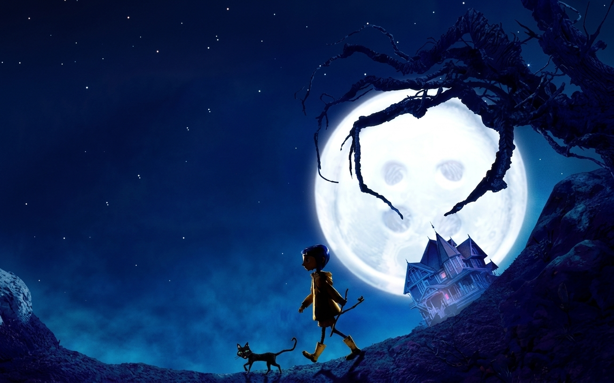
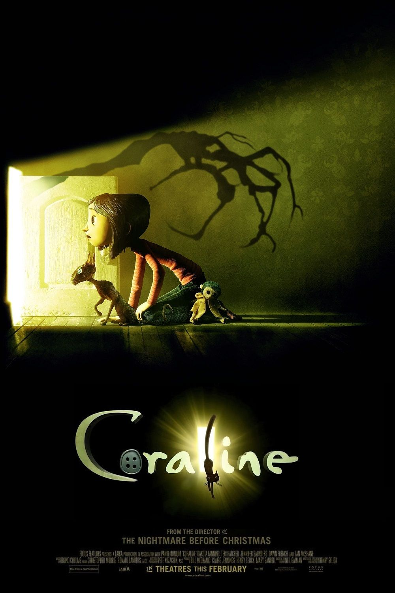

Coraline

Una joven entra por una puerta secreta en su nuevo hogar y descubre una versión alternativa de su vida. En la superficie, esta realidad paralela es inquietantemente similar a su vida real, solo que mucho mejor. Pero cuando esta aventura maravillosamente desequilibrada y fantástica se vuelve peligrosa
Introducción a la película
Ver tráiler